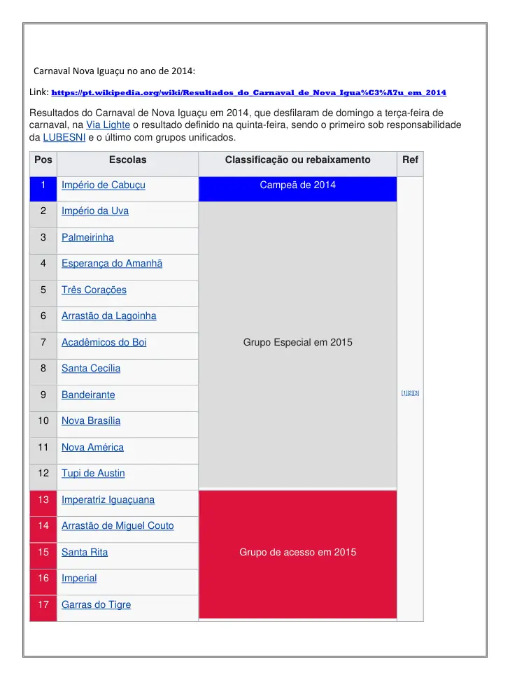
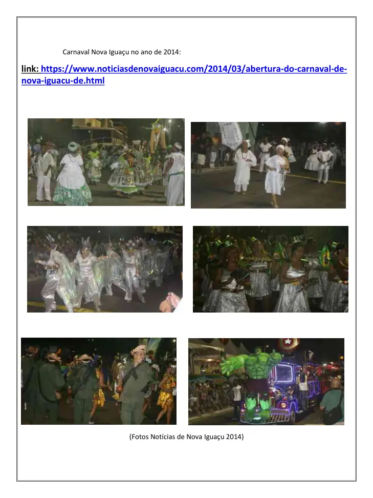

Marco institucional
O portfólio afirma que os desfiles de 2014 ocorreram de domingo a terça-feira, na Via Light, e que esse foi o primeiro Carnaval sob responsabilidade da LUBESNI e o último com grupos unificados.
Fonte página 19O portfólio registra os desfiles de 2014 na Via Light como o primeiro Carnaval sob responsabilidade da LUBESNI e o último com grupos unificados. O acervo preserva também a classificação e fotografias creditadas a Notícias de Nova Iguaçu.
Conteúdo organizado sem transformar propostas futuras em realizações passadas. Cada afirmação principal está vinculada às páginas do portfólio.
O portfólio afirma que os desfiles de 2014 ocorreram de domingo a terça-feira, na Via Light, e que esse foi o primeiro Carnaval sob responsabilidade da LUBESNI e o último com grupos unificados.
Fonte página 19A classificação do acervo apresenta Império de Cabuçu como campeã de 2014 e relaciona as demais agremiações e sua situação para 2015.
Fonte página 19A página seguinte reúne fotografias do Carnaval de 2014 e identifica “Fotos Notícias de Nova Iguaçu 2014”, preservando também o endereço público da matéria.
Fonte página 20Esta página é adequada para comprovar trajetória institucional da Liga na organização do Carnaval Iguaçuano, sempre acompanhada do portfólio original.
As imagens abaixo são reproduções das páginas-fonte usadas para esta ficha de comprovação.


Esta ficha foi construída a partir do Portfólio LUBESNI anexado ao acervo institucional. Para uso em editais, recomenda-se enviar o PDF original junto com o endereço desta página e, quando houver, a fonte pública externa indicada.